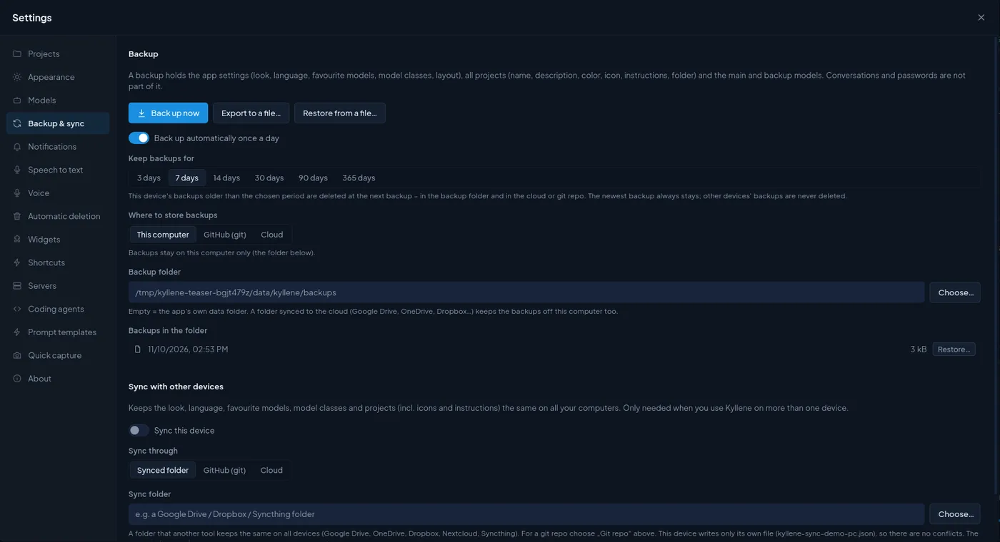

Kyllene
KylleneSync between computers
Use Kyllene on more than one computer (a desktop at work, a laptop at home) and keep it the same on all of them. Nothing goes through a Kyllene server: sync uses a place you own, a synced folder, a private git repo or your cloud drive.

What travels and what does not
| Travels to your other computers | Stays on each computer |
|---|---|
| Look, language, favourite models, model classes | Conversations (in each computer's Hermes database) |
| Projects: name, description, colour, icon, instructions, folder, settings | Kanban boards and cards (also Hermes' database) |
| Widgets: your own widgets, their layout, settings and choices | Panel widths and which side panel is open |
| Prompt templates, cron job templates | Voice and microphone choices, dictation model |
| Which projects are deleted (a project deleted on one computer is deleted on the others) | Folders with code projects, servers |
| What ran on each computer (for the Timeline) | Hermes' own settings, keys and skills |
A project's files sync separately, through the project's own storage (GitHub (git) or Cloud on its Storage tab, see Projects). Hermes itself is not synced: install it on every computer and connect the providers there.
Set it up
- On the first computer open Settings › Backup & sync and switch on Sync this device.
- Choose Sync through:
- Synced folder: a folder that another tool keeps the same everywhere (Google Drive, OneDrive, Dropbox, Nextcloud, Syncthing).
- GitHub (git): a private repo. Kyllene keeps its own clone, commits and pushes; no other tool needed. Git
uses your own credentials (SSH key,
gh); Kyllene never stores a password. - Cloud: a Google Drive, OneDrive or Dropbox account connected in Kyllene.
- On every other computer, install Kyllene and choose the same folder, repo or cloud account.
Each computer writes only its own file (kyllene-sync-<computer>.json), so two computers never overwrite each
other; for the same setting the newest change wins. Sync now syncs at once (pressed while a sync is already running, it runs one more round right after, so a change you
have just made goes too); Devices lists the computers and
when each last changed something.
Widgets from other computers
Widget code that arrives from another computer runs only after you approve it on this one (Settings › Widgets › Approve widget code from other devices, on by default). Changes you make on this computer approve themselves. This stops broken or unwanted code from spreading to all your computers.
Backups are separate
Backups are not sync: they are snapshots you can go back to. They have their own place (Where to store backups) and can also go into the sync repo. See Settings › Backup.